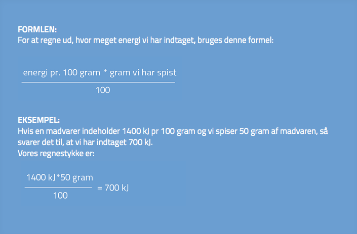

Hvor meget energi, der er i mad, står heldigvis på varedeklarationen. I et tidligere afsnit er varedeklarationen blevet gennemgået.
På en varedeklaration kan vi altid se hvor meget energi, der er i 100 gram mad. Ved at finde ud af hvor mange gram vi spiser af madvaren, kan vi derfor regne os frem til, hvor meget energi, der er i hele madvaren.
Hvordan finder man ud af, hvor meget energi, der er i en madvare, hvis vi ikke havde varedeklarationer?
Der findes maskiner, som kan finde ud af, hvor meget energi, der er i alt mad. Maden bliver brændt af og på baggrund af denne forbrænding kommer maskinen med et resultat om madens energiindhold.
Men vi vil også selv kunne finde frem til mads energiindhold. Det kræver blot lidt udstyr og en masse tålmodighed. Vi har i vores laboratorium lavet et forsøg, hvor målet var at finde frem til en cashewnøds energiindhold. Se resultatet i denne film:
Selvom det er antal kalorier, der har betydning for, om du tager på eller taber dig, er der stor forskel på næringen i maden og dermed sundheden.
Om du spiser 8000 kJ grøntsager & fisk eller om du spiser 8000 kJ chokolade på en dag, har ingen betydning vægtmæssigt. Dog har det stor betydning for sundheden. Grøntsager indeholder bland andet mange vitaminer, som kroppen har brug for.
Du skal derfor prøve at få en sund og varieret kost samtidigt med at du holder dit energiindtag nede.
Se på diaetistforum.dk, hvordan det samme kalorieindhold kan se ud med forskellige fødevarer – en sund tallerken og en usund tallerken.
Om omregning fra Kcal til kJ:
motion-online.dkBeregn dit daglige energiforbrug:
sundhedsguiden.dkSammenhængen mellem Kalorier og Kilojoule:
fitness.dk